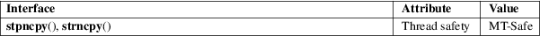

stpncpy, strncpy − zero a fixed-width buffer and copy a string into a character sequence with truncation and zero the rest of it
Standard C library (libc, −lc)
#include <string.h>
char
*strncpy(char dst[restrict .sz],
const char *restrict src,
size_t sz);
char *stpncpy(char dst[restrict
.sz], const char *restrict src,
size_t sz);
Feature Test Macro Requirements for glibc (see feature_test_macros(7)):
stpncpy():
Since glibc 2.10:
_POSIX_C_SOURCE >= 200809L
Before glibc 2.10:
_GNU_SOURCE
These functions copy the string pointed to by src into a null-padded character sequence at the fixed-width buffer pointed to by dst. If the destination buffer, limited by its size, isn’t large enough to hold the copy, the resulting character sequence is truncated. For the difference between the two functions, see RETURN VALUE.
An implementation of these functions might be:
char *
strncpy(char *restrict dst, const char *restrict src, size_t
sz)
{
stpncpy(dst, src, sz);
return dst;
}
char *
stpncpy(char *restrict dst, const char *restrict src, size_t
sz)
{
bzero(dst, sz);
return mempcpy(dst, src, strnlen(src, sz));
}
strncpy()
returns dst.
stpncpy()
returns a pointer to one after the last character in the destination character sequence.
For an explanation of the terms used in this section, see attributes(7).

strncpy()
C11, POSIX.1-2008.
stpncpy()
POSIX.1-2008.
strncpy()
C89, POSIX.1-2001, SVr4, 4.3BSD.
stpncpy()
glibc 1.07. POSIX.1-2008.
The name of these functions is confusing. These functions produce a null-padded character sequence, not a string (see string_copying(7)).
It’s impossible to distinguish truncation by the result of the call, from a character sequence that just fits the destination buffer; truncation should be detected by comparing the length of the input string with the size of the destination buffer.
If you’re going to use this function in chained calls, it would be useful to develop a similar function that accepts a pointer to the end (one after the last element) of the destination buffer instead of its size.
#include
<err.h>
#include <stdio.h>
#include <stdlib.h>
#include <string.h>
int
main(void)
{
char *p;
char buf1[20];
char buf2[20];
size_t len;
if
(sizeof(buf2) < strlen("Hello world!"))
warnx("strncpy: truncating character sequence");
strncpy(buf2, "Hello world!", sizeof(buf2));
len = strnlen(buf2, sizeof(buf2));
printf("[len
= %zu]: ", len);
printf("%.*s\n", (int) len, buf2); // "Hello
world!"
if
(sizeof(buf1) < strlen("Hello world!"))
warnx("stpncpy: truncating character sequence");
p = stpncpy(buf1, "Hello world!", sizeof(buf1));
len = p − buf1;
printf("[len
= %zu]: ", len);
printf("%.*s\n", (int) len, buf1); // "Hello
world!"
exit(EXIT_SUCCESS);
}
wcpncpy(3), string_copying(7)